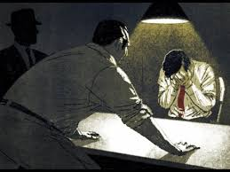
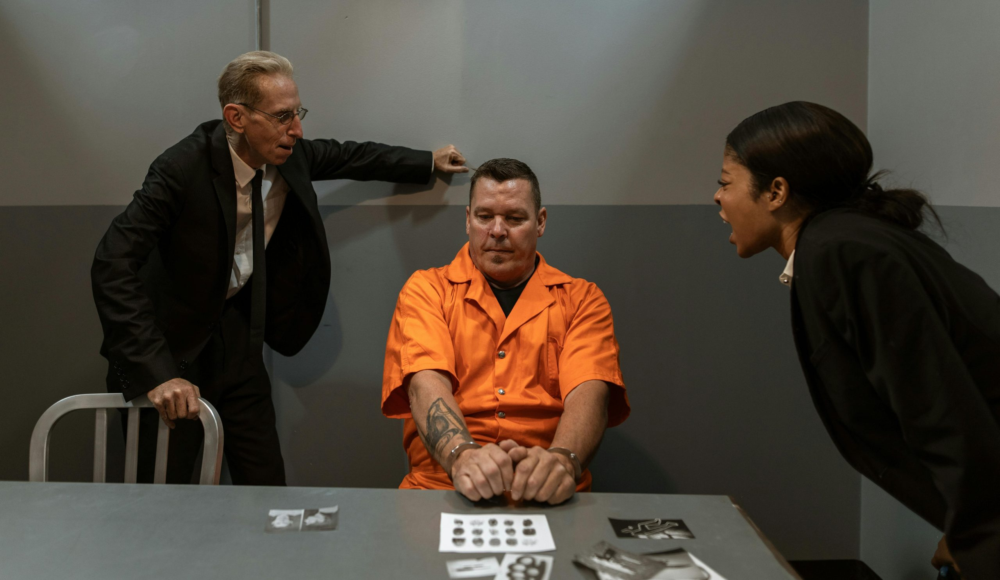
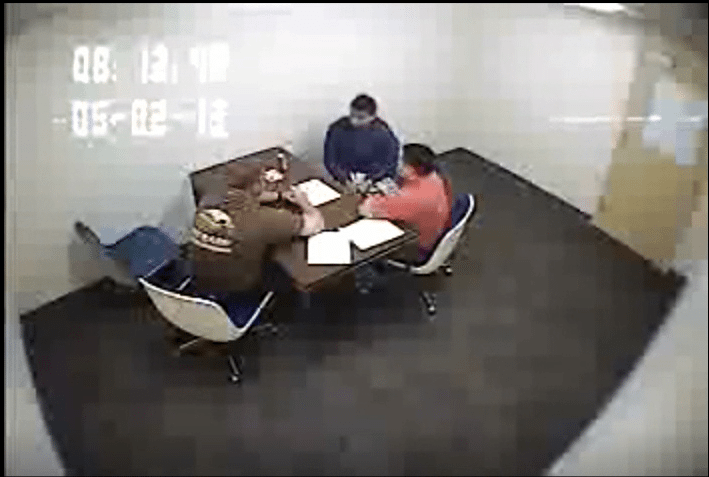

Custodial Interrogation
Custodial interrogation is questioning by police after a person has been taken into custody or deprived of freedom in a significant way – a tense dialogue that tests the limits of human resilience and rights.
Miranda Rights
Miranda rights inform suspects of their right to remain silent, right to an attorney, and that anything said can be used against them. Required before custodial interrogation.
Voluntary vs. Coerced Confessions
Voluntary confessions are given freely without coercion. Coerced confessions are obtained through threats, promises, or physical/psychological pressure and are inadmissible.
Right to Counsel
The Sixth Amendment provides the right to counsel during criminal cases. Once invoked, police must stop questioning until counsel is present.
False Confessions
False confessions occur when innocent people admit to crimes they didn't commit, often due to coercion, mental illness, or interrogation tactics.
Required Court Cases
- : Established Miranda warnings for custodial interrogations.
- : Held that suspects have a right to counsel during interrogations.
The Science of Interrogation and Confessions
Interrogations often employ psychological tactics like the Reid Technique, which builds rapport, presents evidence, and minimizes the crime's severity. Research shows that prolonged questioning can lead to false confessions, especially among vulnerable groups like juveniles or the mentally ill.
Studies indicate that about 25% of wrongful convictions involve false confessions. Factors like sleep deprivation, isolation, and coercive tactics contribute. Understanding these dynamics helps prevent miscarriages of justice.
Visual Ideas
Breakdown of Miranda Warning Components
- You have the right to remain silent.
- Anything you say can and will be used against you in a court of law.
- You have the right to an attorney.
- If you cannot afford an attorney, one will be provided for you.
- Do you understand these rights?

Chart: Legal vs. Illegal Interrogation Techniques
| Legal | Illegal |
|---|---|
| Building rapport | Physical coercion |
| Presenting evidence | Promises of leniency |
| Minimization | Deception about evidence |
Short Embedded Documentary Clip about False Confessions
A video on confessions and interrogations, illustrating key concepts in the process.
Interrogation and Confession Images

